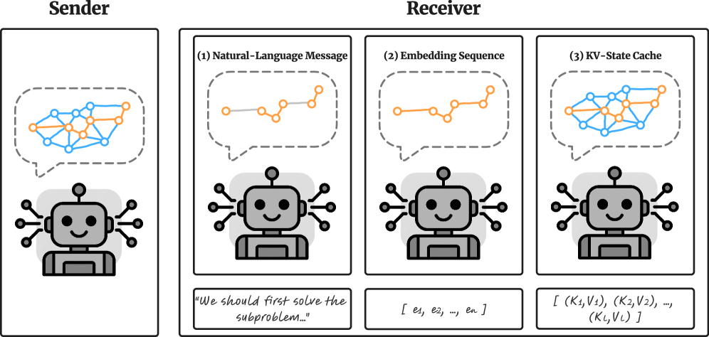
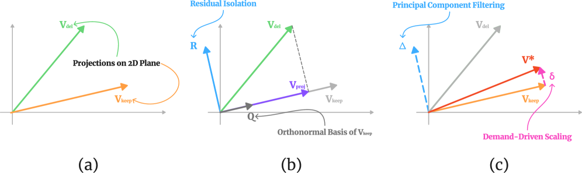

Why it matters왜 중요한가
The bottleneck of latent communication is not "how much you send" but "what is useful."
잠재 통신의 병목은 "얼마나 많이 보내냐"가 아니라 "무엇이 쓸모 있냐"다.
When an agent relays its full KV-cache, communication fidelity is high, but the cost grows linearly with the number of agents, rounds, and prompt length. Moreover, relay compression is a fundamentally different problem from a single agent's cache management — the key is not saving my own memory, but whether the compressed state is useful for the next inference of "another agent." The authors reframe this not as memory reduction but as an information-preserving communication problem.
에이전트가 KV-cache 전체를 넘기면 통신 충실도는 높지만, 비용이 에이전트 수·라운드·프롬프트 길이에 비례해 선형으로 커진다. 게다가 relay 압축은 단일 에이전트의 캐시 관리와 본질적으로 다른 문제 — 핵심은 내 메모리 절약이 아니라, 압축한 상태가 "다른 에이전트"의 다음 추론에 유용한가이다. 저자들은 이를 메모리 축소가 아닌 정보 보존 통신 문제로 재정의한다.

By the numbers핵심 숫자
(ARC-E, budget k=32)통신 KV 최대 절감
(ARC-E, 예산 k=32)
(vs. original prompt)평균 유지 비율
(원본 프롬프트 대비)
beats full relayOBF가 full relay를
능가한 벤치마크
(H-OBF 64.4 vs Full 53.3)AIME25 정확도
(H-OBF 64.4 vs Full 53.3)
per agent · round에이전트·라운드당
프롬프트 토큰 예산
· Qwen3-14B벤치마크
· Qwen3-14B
Results — compression catches up to full결과 — 압축이 full을 따라잡는다
| Benchmark | Full | OBF (최고) | Δ |
|---|---|---|---|
| GSM8K | 92.47 | 92.57 | +0.10 |
| AIME24 | 67.78 | 71.11 | +3.33 |
| AIME25 | 53.33 | 64.44 | +11.11 |
| GPQA | 56.51 | 57.19 | +0.68 |
| HumanEval+ | 84.55 | 85.37 | +0.82 |
| MedQA | 77.34 | 80.45 | +3.11 |
In one diagram한 장의 그림
Idea: reframe compression as a "communication problem"아이디어: 압축을 '통신 문제'로 재정의
MAS용 Eviction
Split the accumulated cache into 4 parts: Sink / inherited history / current prompt / current reasoning. The inherited part is passed as is, and only the tokens deemed important by the attention mass that current reasoning gives the prompt are kept via TopK=32 (adapting H2O and StreamingLLM for relay).
누적 캐시를 Sink / 상속 history / 현재 prompt / 현재 reasoning 4분할. 상속분은 그대로 넘기고, 현재 reasoning이 prompt에 준 attention mass로 중요한 토큰만 TopK=32 유지(H2O·StreamingLLM을 relay용으로 각색).
Orthogonal Backfill (OBF)
Among the value states discarded by hard eviction, extract the orthogonal residual that the retained ones cannot represent, via low-rank (SVD top-p), and inject it into the retained value. Keys stay untouched — a lightweight plug-in.
hard eviction으로 버려지는 value 상태 중, 남긴 것으로 표현 못 하는 직교 잔차(residual)를 저랭크(SVD top-p)로 뽑아 retained value에 주입. key는 그대로 — 가벼운 plug-in.

How it works어떻게 작동하나
- Split cache into 4캐시 4분할Divide into Sink · inherited history · current prompt · current reasoning; relay the inherited part uncompressed and target only the local part (prompt · reasoning) for compression.Sink·상속 history·현재 prompt·현재 reasoning으로 나눠, 상속분은 무압축 전달하고 로컬분(prompt·reasoning)만 압축 대상으로 삼는다.
- Select important tokens중요 토큰 선별Rank by the attention mass that current reasoning assigns to prompt positions and keep only the top k (Head-wise / Layer-wise).현재 reasoning이 prompt 위치에 부여한 attention mass로 순위 매겨 상위 k개만 유지(Head-wise / Layer-wise).
- Extract orthogonal residual직교 잔차 추출Project the discarded value onto the orthogonal complement of the retained ones to isolate only "information the remainder cannot hold," and summarize the key p dimensions with SVD.버린 value를 retained의 직교보공간에 투영해 "남은 것으로 못 담는 정보"만 분리, SVD로 핵심 p차원 요약.
- Inject OBFOBF 주입Scale by the demand ratio δ of evicted vs. retained and add it to the retained value (keys unchanged) → ties or beats full on 7/9 benchmarks.삭제 대 유지의 수요비 δ로 스케일해 retained value에 더한다(key 불변) → full 대비 7/9 벤치마크에서 동등·능가.
What to take away그래서, 가져갈 것
Not "more" but "useful." Cutting communication volume by 80%+ while maintaining or improving accuracy — directly resolving the scaling bottleneck of multi-agent latent communication.
'많이'가 아니라 '쓸모'. 통신량을 80%+ 줄여도 정확도를 유지·향상 — 멀티에이전트 잠재 통신의 스케일 병목을 직접 해소.
Compression as regularization? The fact that it beats full on 7/9 suggests that sending everything may mean sending the noise too.
압축이 곧 정규화? 7/9에서 full을 능가한다는 건, 전부 넘기는 게 잡음까지 넘기는 것일 수 있음을 시사.
relay ≠ single-cache management. The criterion is not "my memory" but "is it useful to the receiving agent" — a new problem definition.
relay ≠ 단일 캐시관리. 기준은 "내 메모리"가 아니라 "받는 에이전트에게 유용한가" — 새로운 문제 정의.
Easy to stack as a plug-in. OBF only modifies values, so it can be added directly on top of existing eviction.
얹기 쉬운 plug-in. OBF는 value만 수정하므로 기존 eviction 위에 그대로 추가 가능.